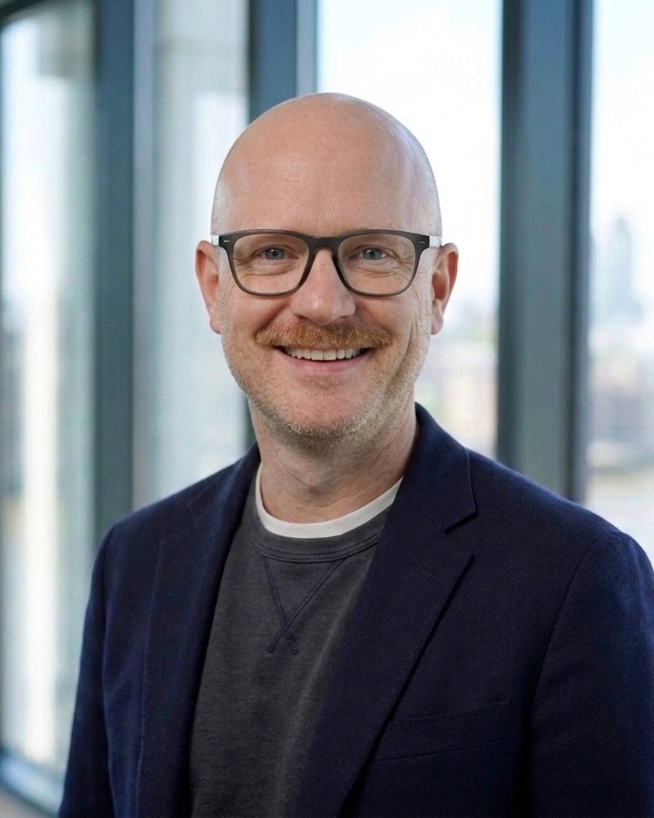
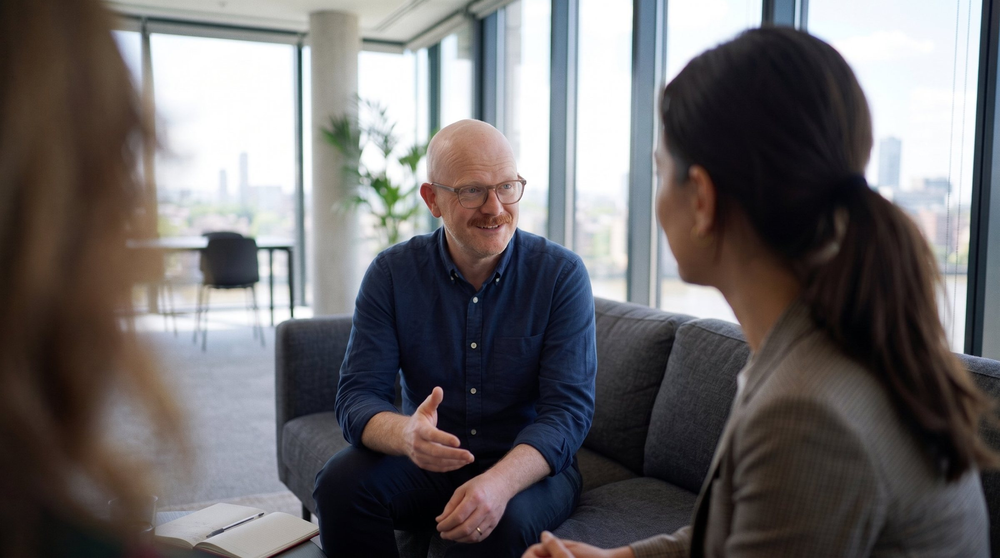

We help founders explain their science to investors
SRIES Lab is a small studio working on the investor story, pitch deck, brand, website and LinkedIn for life science companies.

Founders and CSOs know their science better than anyone. What's harder, from the inside, is seeing which parts an investor needs to hear first, and how to say them in plain words.
Add a few sentences on how SRIES Lab started: who founded it, what they were doing before, and why they started the studio.
Calm, clear and credible
We agree the story in writing before anything is designed.
Order of work
Investors should be able to explain your science to their partners on Monday.
Your deck, website and LinkedIn should all say the same thing.
One story, three formats
Project length
You only pay for the work your stage needs.
The same small team stays with you from workshop to launch.
Every claim, with its source
Every claim in the deck should trace back to evidence.
The people you'll work with

Chris Caudle
Chris supports companies and founders to develop their core story and positioning and, when they’re ready, to build visibility and authority on LinkedIn with investors, partners and customers before and after a fundraising round.

Jordan Daniels
Two or three sentences on background: the science, companies or funds they have worked with, and what they lead on.
Name
Two or three sentences on background: the science, companies or funds they have worked with, and what they lead on.

Pre-seed to Series A
Life science founders preparing a first raise, reworking a deck that isn't landing, or getting ready for a bigger round. Optional: client names or logos you have permission to show, or a short quote from a founder you've worked with.
Find your package →